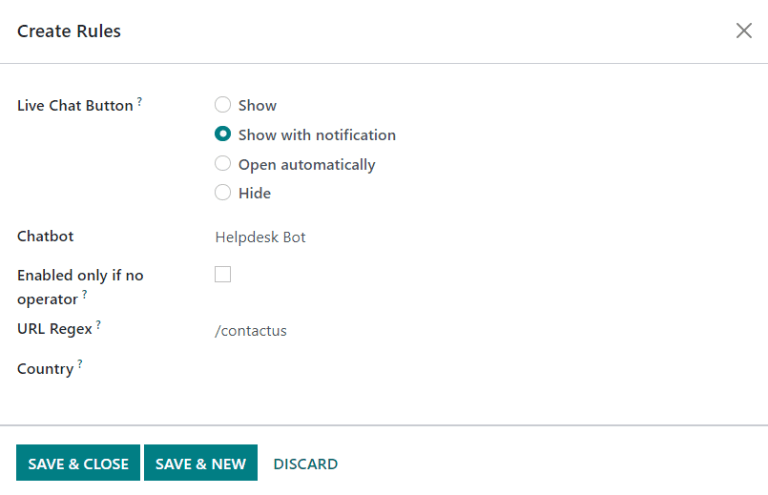

Start receiving tickets¶
Odoo Helpdesk offers multiple channels where customers can reach out for assistance, such as email, live chat, and through a website’s submission form. The variety of these contact options provides customers with multiple opportunities to receive support quickly, while also giving the support team the ability to manage multi-channel support tickets from one central location.
Enable channel options to submit tickets¶
Go to and choose an existing team, or click New to create a new team.
On the team’s settings page, scroll down to Channels. Select one or more channel(s) to enable by checking the respective box(es).
Email Alias
Website Form
Live Chat
Email Alias¶
The Email Alias setting automatically creates tickets from messages sent to that team’s specified email alias.
To alter a Helpdesk team’s email alias, navigate to the Teams settings page. Find Email Alias, under the Channels heading, and then type in the desired team alias in the field.
When a new Helpdesk team is created, an Email Alias is created, as well. This alias can be changed in the Alias field.
Note
If the database does not have a custom domain already configured, click Configure a custom domain to be redirected to the Settings page. From there, enable Custom Email Servers.
When an email is received, the subject line from the email becomes the title of a new Helpdesk ticket. The body of the email is also added to the ticket under the Description tab and in the ticket’s Chatter section.
Important
The configuration steps outlined above are for Odoo Online and Odoo.sh databases. For On-premise databases, additional configuration for custom email servers and email aliases may be required.
Website Form¶
Enabling the Website Form setting adds a new page to the website with a customizable form. A new ticket is created once the required form fields are filled out and submitted.
To activate the website form, navigate to a team’s settings page under . Find the Website Form feature under the Channels section, and check the box.
After the feature is activated, click the Go to Website smart button at the top of the that Teams settings page to view and edit the new website form, which is created automatically by Odoo.
Note
After enabling the website form, the Teams settings page may need to be refreshed before the Go to Website smart button appears.
As well, if a Help Center is published, the smart button will navigate there first. Simply click the Contact Us button at the bottom of the forum to navigate to the ticket submission form.

Customize the website ticket form¶
To customize the default ticket submission form, click the Edit button in the upper right corner of the page. Then click on one of the fields in the form.
Add, remove, or update fields as necessary to alter the information submitted by customers. Fields can be made marked as Required, by toggling the switch from gray to blue in the website builder’s editor window, located under the Field section. As well, other pertinent field information can be edited here, such as:
Type: which matches an Odoo model value to the field (e.g.
Customer Name).Input Type: to determine what time of input the field should be, like
Text,Email,TelephoneorURL.Label: to give the form field a label (e.g.
Full Name,Email Address, etc.). Also control the label position on the form by using the nested Position options.Description: which, optionally, adds an editable line under the input box to provide additional contextual information related to the field.
Placeholder: to add a sample input value.
Default value: to add common use case values that most customers would find valuable
Required: which sets the field as mandatory before the form can be submitted.
Visibility: to allow for absolute or conditional visibility of the field. Nested options, such as device visibility, appear when certain options are selected.
Tip
Text blocks can be added in the farthest 1/3 column of the ticket form page, next to the ticket form. This is an ideal place to include team information such as additional contact details, hours, or common helpful articles that link to the Forum.
Once the form has been optimized and is ready for public use, Save the changes, and then publish the form by clicking on the Unpublished button.
Live Chat¶
The Live Chat feature allows website visitors to connect directly with a support agent or chatbot.
During these conversations, Helpdesk tickets can be instantly created by using the
response command /helpdesk.
To enable Live Chat, navigate to the list view, select a team, and on the Teams settings page, click the check box next to Live Chat, under the Channels heading.
Note
If this is the first time Live Chat has been enabled on the database, the page may need to be saved manually and refreshed before any further steps can be taken.
With the Live Chat setting engaged, click on View Channels. Then, on the Website Live Chat Channels dashboard, select the kanban card for the channel that was created for the Helpdesk team, or create a New one if necessary. When a kanban card is selected, additional options await on the channel’s form.
Customize the live chat channel¶
When an individual channel is clicked on the Website Live Chat Channels dashboard, Odoo directs the page to the channel form. From there, the Channel Name can be edited, however Odoo names this to match the Helpdesk team’s kanban pipeline, by default.
Example
If a Helpdesk team is named Customer Care, a Live Chat channel will be created with the
same name.

On the channel form, navigate through the tabs to complete the setup.
Add operators¶
Operators are the users who will act as agents and respond to live chat requests from customers. The user who originally created the live chat channel will be added by default.
To add additional users, navigate and click on the live chat channel from the Website Live Chat Channels dashboard, and on the Operators tab, click ADD.
Then, click the check box next to the users to be added, and click SELECT. New operators can be created and added to the list, as well, by filling out the Create Operators form and then clicking SAVE & CLOSE (or SAVE & NEW for multiplerecord creations).
As well, current operators can be edited or removed by clicking on their respective boxes in the Operators tab, and then adjusting their form values, or by using one of the form buttons located at the bottom of the form, such as REMOVE.
Tip
Users can add themselves as an operator by clicking the Join button on a Live Chat channel.
Modify channel options¶
The Options tab contains the visual and text settings for the live chat window.
Change the text in the Text of the Button field to update the greeting displayed in the text bubble when the live chat button appears on the website.
Edit the Welcome Message to change the message a visitor sees when they open the chat window. This message will appear as though it is sent by a live chat operator, and should be an invitation to continue the conversation.
Edit the Chat Input Placeholder to change the text that appears in the box where visitors will type their replies.
Change the Livechat Button Color and the Channel Header Color by clicking a color bubble to open the color selection window. Click the refresh icon to the right of the color bubbles to reset the colors to the default selection.
Tip
Color selection, for the button or header, can be made manually, or through RGB, HSL or HEX code selection. Different options will be available, depending on your operating system.
Create channel rules¶
The Channel Rules tab determines when the live chat window opens on the website by logic of when a URL Regex action is triggered (e.g., a page visit).
Edit existing rules, or create a new one by clicking Add a line, and fill out the pop-up form details based on how the rule should apply.
If a Chatbot will be included on this channel, select it from the dropdown. If the chatbot will only be active when no operators are available, check the box labeled Enabled only if no operator.
Note
If a chatbot is added to a live chat channel, then 3 new smart buttons will appear on the channel settings form: Chatbots, Sessions, and % Happy.
The Chatbots smart button is where the chatbot can be programmed with a Script. Each line in the Script contains a Message, Step Type, Answers, and conditional Only If logic that applies when certain pre-filled answers are chosen. To create more steps in the Script, click Add a line and fill out the script steps form according to the desired logic.
Sessions is where live chat sessions are recorded in order of descending Session Date, by default. Each record includes the Attendees involved in the live chat session, the # Messages, as well as any Rating that was received when the session ended.
The % Happy smart button includes a log of ratings that were left by live chat attendees, and are labeled by date, time, and the support agent who was responsible for the live chat session.
Add the URL for the pages this channel will be applied to in the URL Regex field. If this channel will only be available to users in specific countries, add them to the Country field. If this field is left blank, the channel will be available to all site visitors.
Use the live chat widget¶
The Widget tab on the live chat channel form offers an embeddable website widget, or a shortcode for instant customer/supplier access to a live chat window.
The live chat Widget can be applied to websites created through Odoo by navigating to the . Then scroll to the Live Chat section, and select the channel to add to the site. Click Save to apply.
To add the widget to a website created on a third-party platform, click COPY and paste
the code into the <head> tag on the site.
Likewise, to send a live chat session to a customer or supplier, click the second COPY button which contains a link to join directly.
Create a support ticket from a live chat session¶
Once live chat is enabled, operators will be able to communicate with site visitors in real time.
During the conversation, an operator can use the shortcut command /helpdesk to create a ticket without leaving
the chat window. The transcript from the conversation will be added to the new ticket, under the
Description tab.
Prioritizing tickets¶
All tickets include a Priority field. The highest priority tickets will appear at the top of the kanban and list views.

The priority levels are represented by stars:
0 stars = Low Priority
1 star = Medium Priority
2 stars = High Priority
3 stars = Urgent
Tickets will be set to low priority (0 stars) by default. To change the priority level, select the appropriate number of stars on the kanban card, or on the ticket.
Warning
As priority levels can be used as criteria for assigning SLAs, changing the priority level of a ticket can alter the SLA deadline.